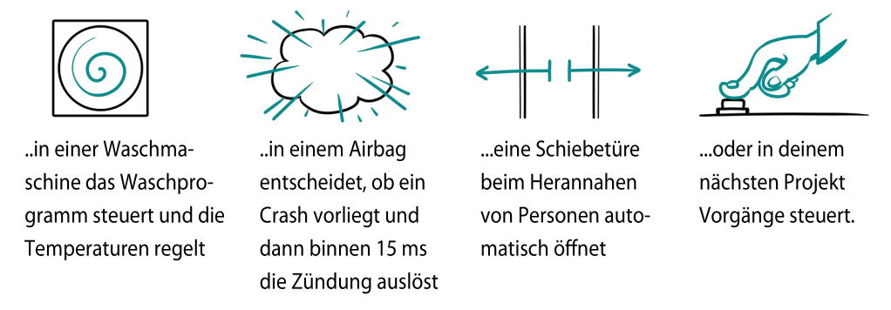
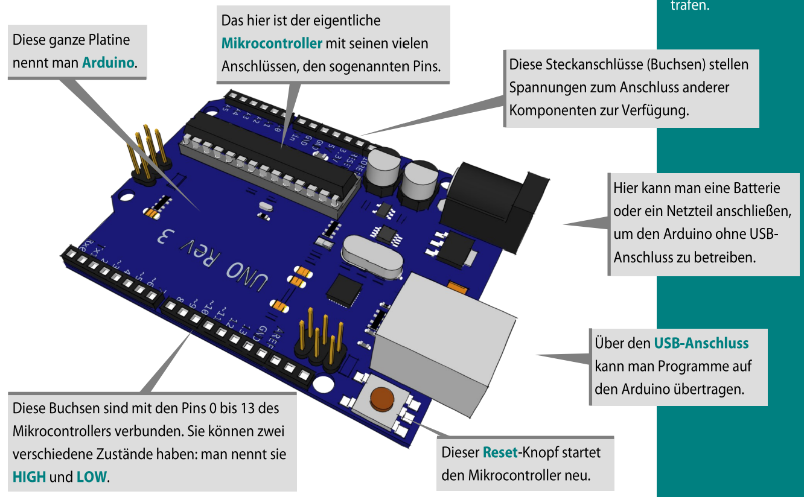
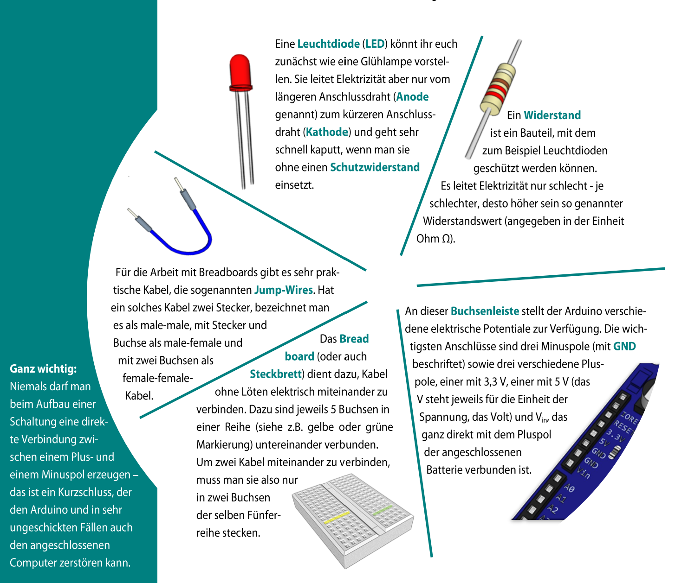
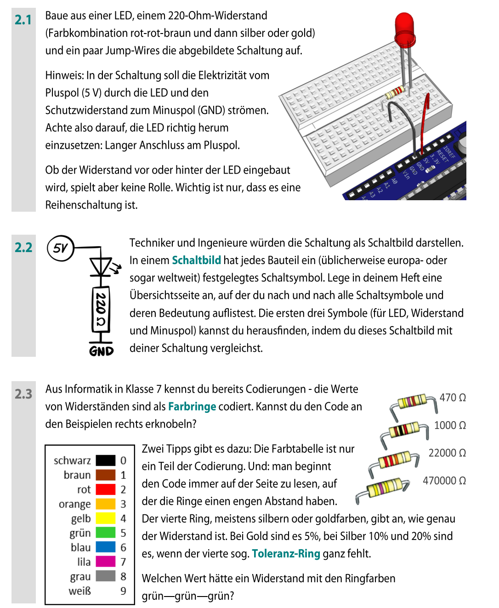

Einführung in den Mikrocontroller Arduino
Dieser Lernbaustein führt dich schrittweise an den Arduino heran – als „Steuerzentrale“ für kleine technische Projekte.
So arbeitest du hier
- Lies kurz, dann mach die Aufgaben direkt auf der Seite.
- Deine Texte werden lokal im Browser gespeichert (nicht an die Lehrkraft gesendet).
- Wenn du abgeben sollst: nutze „Text kopieren“ und füge ihn ins Abgabe-Tool (OneNote) ein.
Wichtig (Technik & Sicherheit)
GitHub Pages ist statisch: Es gibt keine automatische Ergebnisabgabe.
Elektrisch: Baue Schaltungen nur wie gezeigt auf und vermeide Kurzschlüsse.
Elektrisch: Baue Schaltungen nur wie gezeigt auf und vermeide Kurzschlüsse.
Inhaltsverzeichnis (Überblick)
Was kommt später?
Es folgen u. a. Programmieren, Blinken, Töne/Unterprogramme, Variablen, serielle Ausgabe, Schleifen, LEDs dimmen, If/While und mehr.
1 Was ist ein Mikrocontroller?
2 Es leuchtet!
3 Programm zum Programmieren
4 Das erste Blinken
5 Töne, Unterprogramme, Transistor
… (weitere Kapitel im Original)
Mini-Check-in: Was erwartest du vom Arduino?
Text wird gespeichert
Hinweis: Speicherung erfolgt im Browser (localStorage). Auf einem anderen Gerät ist der Text nicht automatisch da.
1. Was ist ein Mikrocontroller?

Original – Seite 3
Kernaussage
Mikrocontroller sind kleine elektronische Bauteile, die in vielen Geräten als „Steuerzentrale“ arbeiten – z. B. in Waschmaschinen, Airbags, automatischen Türen oder in deinem Projekt.
Arduino
Der Arduino ist eine Mikrocontroller-Platine mit Anschlüssen (Pins), über die man Bauteile verbinden und Programme übertragen kann (z. B. per USB).

Original – Seite 3
Begriffe
- HIGH / LOW: zwei Zustände an Pins (vereinfacht: an/aus bzw. Spannung da/nicht da).
- USB-Anschluss: darüber kann man Programme auf den Arduino übertragen.
- Reset: startet den Mikrocontroller neu.
Aufgabe 1: Mikrocontroller im Alltag
Text wird gespeichert
Nenne mindestens 3 Geräte aus deinem Alltag, in denen wahrscheinlich ein Mikrocontroller steckt.
Erkläre bei einem Gerät kurz, was dort gesteuert wird.
2. Es leuchtet!

Original – Seite 4
LED (Leuchtdiode)
Eine LED ist eine Diode, die leuchtet – Strom fließt dabei nur in eine Richtung (Anode/Kathode).
Widerstand
Ein Widerstand begrenzt den Strom. Ohne „Schutzwiderstand“ kann eine LED sehr schnell kaputtgehen.
Ganz wichtig
Verwende beim Aufbau am Breadboard passende Kabel (Jumper-Wires) und achte darauf, keine falschen Verbindungen zu stecken.
Aufgabe 2: Warum braucht die LED einen Widerstand?
Text wird gespeichert
Aufgaben 2.1–2.3

Original – Seite 5
Aufbau-Idee
Auf Seite 5 wird eine LED-Schaltung (u. a. mit 220 Ω Widerstand) sowie Reihenschaltung/Parallelschaltung erläutert.
2.1 LED + 220 Ω (Farben laut Bild)
Dokumentation
Baue eine Schaltung aus einer LED, einem 220 Ω-Widerstand und einem Jumper-Wire wie im Bild beschrieben. Notiere:
- Wie hast du erkannt, welches LED-Beinchen an den Pluspol gehört?
- Spielt es eine Rolle, ob der Widerstand vor oder hinter der LED ist (solange es eine Reihenschaltung ist)?
2.2 Schaltbild lesen
Verstehen
Das Bild zeigt, wie man eine reale Schaltung als Schaltbild darstellt (mit Pluspol, Bauteilen und GND/Masse).
Schreibe in eigenen Worten: Welche Informationen liefert ein Schaltbild, und warum ist es praktisch?
Schreibe in eigenen Worten: Welche Informationen liefert ein Schaltbild, und warum ist es praktisch?
2.3 Widerstands-Farbcodes
Knobelteil
Auf Seite 5 wird auf Farbringe von Widerständen Bezug genommen (Codierung von Zahlenwerten).
Notiere:
Notiere:
- Wie würdest du einer anderen Person erklären, was die Farbringe grundsätzlich bedeuten?
- Welche Informationen fehlen dir noch, um jeden Widerstand sicher zu bestimmen?
Merksatz: Reihe vs. Parallel
Bei der Reihenschaltung fließt der Strom nacheinander durch mehrere Bauteile; bei der Parallelschaltung gibt es mehrere Strompfade.
Reflexion: Wo würdest du Reihe/Parallel im Alltag vermuten?
Text wird gespeichert
Wenn ihr abgeben sollt: Nutze Text kopieren und füge ihn in eure Abgabe (Moodle/Nextcloud-Formular) ein.
Abgabe – Sammel-Checkliste
Checkliste
- ☐ Erwartung an Arduino (Check-in)
- ☐ Aufgabe 1 – Mikrocontroller im Alltag
- ☐ Aufgabe 2 – LED & Widerstand
- ☐ Aufgabe 2.1 – Aufbau & Beobachtung
- ☐ Aufgabe 2.2 – Schaltbild
- ☐ Aufgabe 2.3 – Widerstandsfarben
- ☐ Reflexion Reihe/Parallel
Gesamtabgabe (optional)
lokal gespeichert